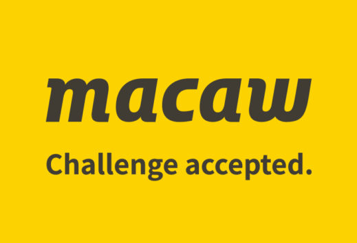

Specialized in:
-Digital marketing & commerce
-Data, analytics & AI
-Business applications
-Collaboration & modern workplace
Technology used: Microsoft, AI
Macaw
Macaw is a Dutch company, it has international connections, the company is a Microsoft partner and they work with big companies.Specialized in:
-Digital marketing & commerce
-Data, analytics & AI
-Business applications
-Collaboration & modern workplace
Technology used: Microsoft, AI

YourSurprise
YourSurprise has one campus in Zierikzee with costumers from all around the world.Specialized in:
-Personal gift making online
Technology used: AI, and own design software on website
Veracode
Working at Veracode means lots of remote work from home. They have multiple offices around the world.Specialized in:
-Security
Technology used: Client’s software, ethical hacking
NedBase
NedBase has one location, it is based in Middelburg and they have small team.Specialized in:
-Website/application design
Technology used: programming languages
Oracle
Oracle is an American multinational corporation with offices in 73 countries across the world.Specialized in:
-Selling database software and technology
-cloud engineered systems
Technology used: mainly cloud & own software